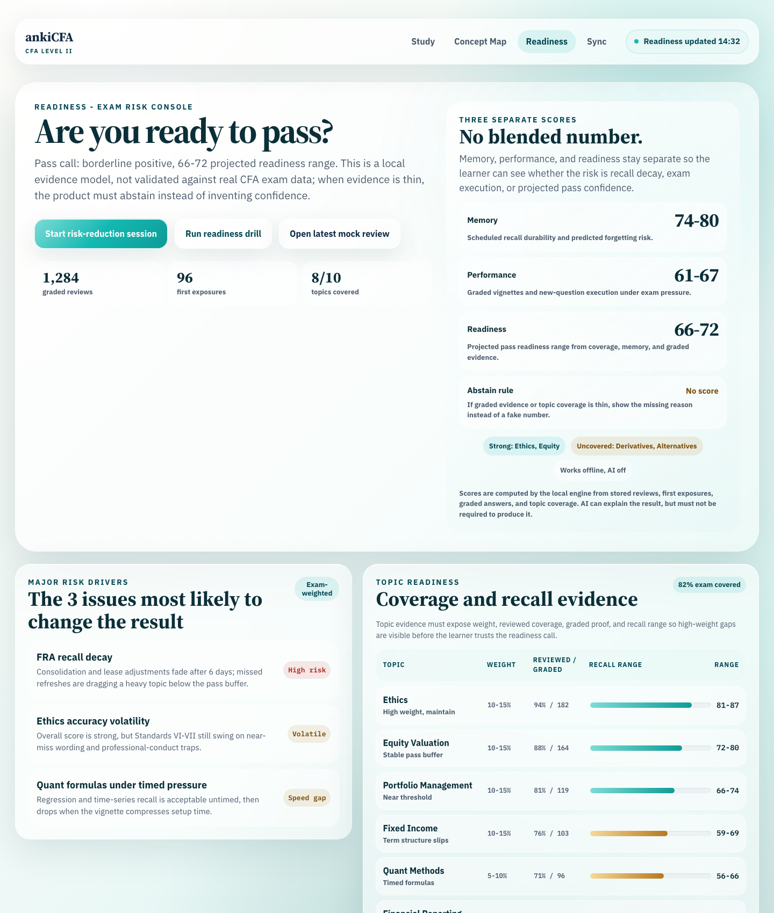
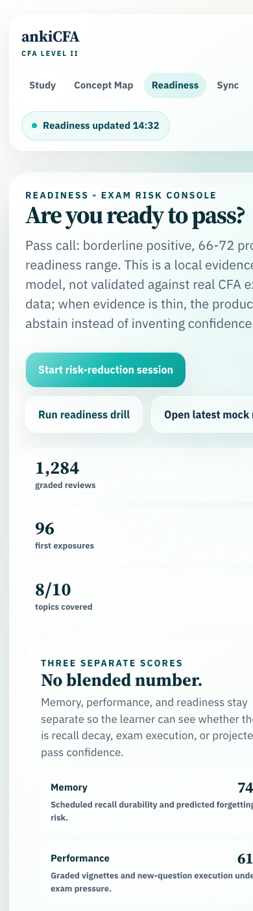

Frozen at 2026-07-05 17:35:33 from .lavish/readiness-screen.html. This packet preserves the approved readiness concept for pixel-faithful desktop and Android implementation.


<!doctype html>
<html lang="en">
<head>
<meta charset="utf-8" />
<meta name="viewport" content="width=device-width, initial-scale=1" />
<title>ankiCFA - Readiness Screen Concept</title>
<link rel="preconnect" href="https://fonts.googleapis.com" />
<link rel="preconnect" href="https://fonts.gstatic.com" crossorigin />
<link href="https://fonts.googleapis.com/css2?family=IBM+Plex+Sans:wght@400;500;600;700;800&family=Source+Serif+4:opsz,wght@8..60,400;8..60,600;8..60,700&family=IBM+Plex+Mono:wght@400;500;600&display=swap" rel="stylesheet" />
<style>
:root{
--ink:#122B46;
--muted:#4D5C6D;
--faint:#8b97a4;
--line:rgba(255,255,255,.72);
--pearl:#fbfaf5;
--turq:#14B8B1;
--turq-deep:#0E9C97;
--turq-ink:#064a54;
--turq-soft:#E4F6F5;
--deep:#053b45;
--red:#b42318;
--amber:#b7791f;
--green:#15803d;
--glass:rgba(255,255,255,.62);
--glass-strong:rgba(255,255,255,.78);
--shadow:0 28px 90px rgba(5,59,69,.16);
--sans:'IBM Plex Sans',system-ui,-apple-system,Segoe UI,Roboto,sans-serif;
--serif:'Source Serif 4',Georgia,serif;
--mono:'IBM Plex Mono',ui-monospace,Menlo,monospace;
}
*{box-sizing:border-box;}
html,body{margin:0;padding:0;}
body{
min-height:100vh;
font-family:var(--sans);
color:var(--ink);
background:
radial-gradient(circle at 12% 0%, rgba(255,255,255,.96), transparent 23rem),
radial-gradient(circle at 86% 8%, rgba(20,184,177,.22), transparent 28rem),
radial-gradient(circle at 56% 70%, rgba(5,59,69,.16), transparent 34rem),
linear-gradient(135deg,var(--pearl) 0%, #eef9f7 42%, #d8f3ef 64%, rgba(5,59,69,.24) 100%);
font-size:18px;
line-height:1.5;
-webkit-font-smoothing:antialiased;
overflow-x:hidden;
}
body::before{
content:"";
position:fixed;
inset:0;
pointer-events:none;
background:
radial-gradient(circle at 18% 18%, rgba(255,255,255,.72), transparent 13rem),
radial-gradient(circle at 78% 22%, rgba(20,184,177,.20), transparent 19rem);
mix-blend-mode:screen;
}
h1,h2,h3,.serif{font-family:var(--serif);}
h1{font-size:clamp(38px,5vw,66px);line-height:1.01;letter-spacing:-.04em;margin:0;color:#0b2f38;}
h2{font-size:clamp(27px,3vw,38px);line-height:1.1;margin:0;color:#0b2f38;}
h3{font-size:23px;line-height:1.16;margin:0;color:#0b2f38;}
p{margin:0;color:var(--muted);}
a{color:inherit;}
.page{max-width:1440px;margin:0 auto;padding:35px 28px 90px;min-width:0;}
.appbar{
position:sticky;
top:20px;
z-index:30;
border:1px solid var(--line);
border-radius:28px;
background:rgba(255,255,255,.70);
box-shadow:0 14px 50px rgba(5,59,69,.10);
backdrop-filter:blur(22px) saturate(1.25);
-webkit-backdrop-filter:blur(22px) saturate(1.25);
min-width:0;
}
.appbar-in{display:flex;align-items:center;gap:20px;flex-wrap:wrap;padding:15px 18px;min-width:0;}
.brand{font-family:var(--serif);font-size:24px;font-weight:700;letter-spacing:-.01em;color:var(--ink);min-width:0;}
.brand small{display:block;font-family:var(--sans);font-size:11px;font-weight:700;letter-spacing:.16em;color:var(--turq-ink);text-transform:uppercase;}
.tabs{display:flex;gap:4px;margin-left:auto;flex-wrap:wrap;min-width:0;}
.tabs a{text-decoration:none;color:var(--muted);font-size:16px;font-weight:700;padding:10px 16px;border-radius:999px;white-space:nowrap;}
.tabs a.on,.tabs a:hover{color:var(--turq-ink);background:rgba(20,184,177,.12);box-shadow:inset 0 1px 0 rgba(255,255,255,.65);}
.sync-chip{display:inline-flex;align-items:center;gap:9px;border:1px solid rgba(20,184,177,.22);background:rgba(228,246,245,.58);color:var(--turq-ink);border-radius:999px;padding:10px 15px;font-size:15px;font-weight:700;white-space:nowrap;min-width:0;}
.dot{width:8px;height:8px;border-radius:999px;background:var(--turq);flex:0 0 auto;}
.hero,.glass-card,.next-panel{
border:1px solid var(--line);
background:var(--glass);
box-shadow:inset 0 1px 0 rgba(255,255,255,.78),0 20px 70px rgba(5,59,69,.12);
backdrop-filter:blur(22px) saturate(1.18);
-webkit-backdrop-filter:blur(22px) saturate(1.18);
min-width:0;
}
.hero{
position:relative;
overflow:hidden;
margin-top:33px;
border-radius:40px;
padding:35px;
background:
linear-gradient(135deg,rgba(255,255,255,.86),rgba(255,255,255,.48)),
radial-gradient(circle at 76% 18%, rgba(20,184,177,.20), transparent 24rem);
box-shadow:var(--shadow);
}
.hero::after{
content:"";
position:absolute;
inset:1px;
border-radius:39px;
pointer-events:none;
background:linear-gradient(120deg,rgba(255,255,255,.68),transparent 30%,rgba(255,255,255,.16));
mask:linear-gradient(#000,transparent 70%);
}
.hero-grid{position:relative;z-index:1;display:grid;grid-template-columns:minmax(0,1.15fr) minmax(300px,.85fr);gap:28px;align-items:stretch;}
.eyebrow{font-size:14px;font-weight:800;letter-spacing:.15em;text-transform:uppercase;color:var(--turq-ink);}
.lede{margin-top:13px;font-size:20px;max-width:850px;color:var(--muted);}
.hero-actions{display:flex;gap:13px;flex-wrap:wrap;margin-top:28px;}
.btn{display:inline-flex;align-items:center;justify-content:center;border-radius:18px;padding:15px 19px;font-weight:800;font-size:16px;text-decoration:none;border:1px solid rgba(255,255,255,.72);box-shadow:inset 0 1px 0 rgba(255,255,255,.78),0 16px 44px rgba(5,59,69,.10);min-width:0;text-align:center;cursor:pointer;}
.btn.primary{background:linear-gradient(135deg,#7edbd6,#14B8B1,#0E9C97);color:#fff;border-color:rgba(255,255,255,.84);}
.btn.secondary{background:rgba(255,255,255,.58);color:var(--turq-ink);}
.btn.ghost{background:rgba(255,255,255,.36);color:var(--ink);}
.btn.small{border-radius:15px;padding:12px 13px;font-size:14px;box-shadow:inset 0 1px 0 rgba(255,255,255,.72),0 10px 28px rgba(5,59,69,.08);}
.metric-row{display:grid;grid-template-columns:repeat(3,minmax(0,1fr));gap:12px;margin-top:24px;}
.metric{border:1px solid rgba(255,255,255,.62);background:rgba(255,255,255,.46);border-radius:18px;padding:14px;min-width:0;}
.metric strong{display:block;font-family:var(--serif);font-size:28px;line-height:1;color:#0b2f38;}
.metric span{display:block;margin-top:4px;color:var(--muted);font-size:13px;font-weight:700;}
.score-card{
border-radius:30px;
padding:24px;
background:linear-gradient(145deg,rgba(255,255,255,.80),rgba(228,246,245,.48));
display:grid;
gap:14px;
align-content:start;
text-align:left;
min-width:0;
}
.score-stack{display:grid;gap:11px;min-width:0;}
.score-mini{
display:grid;
gap:5px;
border:1px solid rgba(255,255,255,.66);
background:rgba(255,255,255,.48);
border-radius:20px;
padding:14px;
min-width:0;
}
.score-mini .score-head{display:flex;align-items:center;justify-content:space-between;gap:10px;min-width:0;}
.score-mini b{font-family:var(--serif);font-size:clamp(24px,3.2vw,36px);line-height:1;color:#0b2f38;letter-spacing:-.03em;white-space:nowrap;}
.score-mini strong{font-size:15px;color:#0b2f38;overflow-wrap:anywhere;}
.score-mini small{display:block;color:var(--muted);font-size:13px;font-weight:700;overflow-wrap:anywhere;}
.score-mini.abstain b{font-family:var(--sans);font-size:15px;color:#7a4b08;letter-spacing:0;}
.score-note{font-size:13px;color:var(--muted);font-weight:700;overflow-wrap:anywhere;}
.confidence{display:flex;gap:8px;flex-wrap:wrap;justify-content:center;min-width:0;}
.chip{display:inline-flex;align-items:center;gap:8px;border:1px solid rgba(255,255,255,.62);background:rgba(255,255,255,.46);border-radius:999px;padding:8px 11px;color:var(--muted);font-size:13px;font-weight:800;min-width:0;overflow-wrap:anywhere;}
.chip.turq{background:rgba(20,184,177,.12);color:var(--turq-ink);}
.chip.warn{background:rgba(183,121,31,.12);color:#7a4b08;}
.grid{display:grid;gap:20px;margin-top:23px;min-width:0;}
.console-grid{grid-template-columns:minmax(0,.92fr) minmax(0,1.08fr);align-items:start;}
.glass-card,.next-panel{border-radius:28px;padding:23px;}
.card-title{display:flex;align-items:flex-start;justify-content:space-between;gap:15px;margin-bottom:15px;min-width:0;}
.card-title > div{min-width:0;}
.status-pill{display:inline-flex;align-items:center;border-radius:999px;background:rgba(20,184,177,.12);color:var(--turq-ink);font-size:13px;font-weight:800;padding:7px 10px;white-space:normal;line-height:1.2;text-align:center;}
.risk-list{display:grid;gap:12px;min-width:0;}
.risk{
display:grid;
grid-template-columns:minmax(0,1fr) auto;
gap:15px;
align-items:center;
border:1px solid rgba(255,255,255,.62);
background:rgba(255,255,255,.44);
border-radius:20px;
padding:15px;
min-width:0;
}
.risk strong{display:block;color:#0b2f38;overflow-wrap:anywhere;}
.risk small{display:block;color:var(--muted);font-size:15px;margin-top:3px;overflow-wrap:anywhere;}
.risk-score{font-family:var(--mono);font-size:13px;font-weight:700;border-radius:999px;padding:7px 9px;white-space:nowrap;}
.risk-score.high{background:rgba(180,35,24,.10);color:var(--red);}
.risk-score.med{background:rgba(183,121,31,.12);color:#7a4b08;}
.risk-score.keep{background:rgba(21,128,61,.10);color:var(--green);}
.coverage-copy{font-size:14px;margin-bottom:13px;overflow-wrap:anywhere;}
.topic-list{display:grid;gap:9px;min-width:0;}
.topic{
display:grid;
grid-template-columns:minmax(135px,.82fr) minmax(64px,.34fr) minmax(92px,.42fr) minmax(0,1fr) auto;
gap:10px;
align-items:center;
border:1px solid rgba(255,255,255,.62);
background:rgba(255,255,255,.42);
border-radius:18px;
padding:12px;
min-width:0;
}
.topic.header{background:rgba(228,246,245,.38);font-size:12px;font-weight:800;color:var(--turq-ink);text-transform:uppercase;letter-spacing:.08em;}
.topic-name{min-width:0;}
.topic-name strong{display:block;color:#0b2f38;font-size:16px;overflow-wrap:anywhere;}
.topic-name span{display:block;color:var(--muted);font-size:13px;font-weight:700;margin-top:1px;}
.topic-stat{font-family:var(--mono);font-size:12px;font-weight:700;color:var(--muted);white-space:nowrap;}
.bar{height:10px;border-radius:999px;background:rgba(233,237,241,.74);overflow:hidden;box-shadow:inset 0 1px 2px rgba(5,59,69,.08);min-width:0;}
.bar i{display:block;height:100%;border-radius:999px;background:linear-gradient(90deg,#7edbd6,#0e9c97);}
.bar i.warn{background:linear-gradient(90deg,#f7d997,#b7791f);}
.bar i.danger{background:linear-gradient(90deg,#f7b4ac,#b42318);}
.pct{font-family:var(--mono);font-weight:700;color:#0b2f38;font-size:14px;white-space:nowrap;}
.next-panel{
background:
linear-gradient(145deg,rgba(255,255,255,.76),rgba(228,246,245,.48)),
radial-gradient(circle at 90% 12%, rgba(20,184,177,.18), transparent 20rem);
}
.action-plan{display:grid;grid-template-columns:minmax(0,1fr) minmax(0,1fr) minmax(0,1fr);gap:13px;margin-top:17px;min-width:0;}
.action{
border:1px solid rgba(255,255,255,.66);
background:rgba(255,255,255,.48);
border-radius:21px;
padding:16px;
min-width:0;
}
.action b{display:block;font-family:var(--serif);font-size:20px;line-height:1.16;color:#0b2f38;overflow-wrap:anywhere;}
.action span{display:block;margin-top:7px;color:var(--muted);font-size:14px;overflow-wrap:anywhere;}
.action .time{display:inline-flex;margin-top:13px;border-radius:999px;background:rgba(20,184,177,.12);color:var(--turq-ink);font-size:12px;font-weight:800;padding:6px 9px;}
.next-actions{display:flex;gap:12px;flex-wrap:wrap;margin-top:18px;}
.retention-watch{
display:grid;
grid-template-columns:minmax(0,.82fr) minmax(0,1.18fr);
gap:14px;
margin-top:18px;
min-width:0;
}
.retention-summary,.forget-list{
border:1px solid rgba(255,255,255,.66);
background:rgba(255,255,255,.46);
border-radius:22px;
padding:17px;
min-width:0;
}
.retention-summary strong{
display:block;
font-family:var(--serif);
font-size:clamp(26px,4vw,42px);
line-height:1;
color:#0b2f38;
letter-spacing:-.03em;
}
.retention-summary span{display:block;margin-top:7px;color:var(--muted);font-size:14px;font-weight:700;overflow-wrap:anywhere;}
.forget-list{display:grid;gap:10px;}
.forget-item{
display:grid;
grid-template-columns:minmax(0,1fr) auto;
gap:10px;
align-items:center;
border-radius:16px;
background:rgba(255,255,255,.42);
padding:11px 12px;
min-width:0;
}
.forget-item b{display:block;color:#0b2f38;font-size:15px;overflow-wrap:anywhere;}
.forget-item span{display:block;color:var(--muted);font-size:13px;font-weight:700;margin-top:1px;overflow-wrap:anywhere;}
.forget-item em{font-style:normal;font-family:var(--mono);font-size:12px;font-weight:700;color:#7a4b08;background:rgba(183,121,31,.12);border-radius:999px;padding:6px 8px;white-space:nowrap;}
.footer-note{margin-top:22px;border:1px solid rgba(255,255,255,.56);background:rgba(255,255,255,.34);border-radius:22px;padding:18px;display:flex;gap:14px;align-items:center;justify-content:space-between;flex-wrap:wrap;min-width:0;}
.footer-note p{font-size:15px;min-width:0;overflow-wrap:anywhere;}
@media(max-width:980px){
.hero-grid,.console-grid,.metric-row,.action-plan,.retention-watch{grid-template-columns:minmax(0,1fr);}
.tabs{margin-left:0;}
}
@media(max-width:720px){
body{font-size:17px;}
.page{padding:22px 14px 70px;}
.hero{padding:24px;border-radius:30px;}
.hero::after{border-radius:29px;}
.appbar{top:10px;border-radius:22px;}
.sync-chip{white-space:normal;}
.tabs a{font-size:15px;padding:9px 12px;}
.topic{grid-template-columns:minmax(0,1fr);gap:9px;}
.topic.header{display:none;}
.risk{grid-template-columns:minmax(0,1fr);}
.risk-score{justify-self:start;}
.score-orb{width:min(230px,100%);}
}
</style>
</head>
<body>
<main class="page">
<nav class="appbar">
<div class="appbar-in">
<div class="brand">ankiCFA <small>CFA Level II</small></div>
<div class="tabs">
<a href="#">Study</a>
<a href="#">Concept Map</a>
<a class="on" href="#">Readiness</a>
<a href="#">Sync</a>
</div>
<div class="sync-chip"><span class="dot"></span> Readiness updated 14:32</div>
</div>
</nav>
<section class="hero">
<div class="hero-grid">
<div>
<div class="eyebrow">Readiness - Exam Risk Console</div>
<h1>Are you ready to pass?</h1>
<p class="lede">Pass call: borderline positive, 66-72 projected readiness range. This is a local evidence model, not validated against real CFA exam data; when evidence is thin, the product must abstain instead of inventing confidence.</p>
<div class="hero-actions">
<a class="btn primary" href="#" onclick="queueReadinessAction('Start risk-reduction session')">Start risk-reduction session</a>
<a class="btn secondary" href="#" onclick="queueReadinessAction('Run readiness drill')">Run readiness drill</a>
<a class="btn ghost" href="#" onclick="queueReadinessAction('Open latest mock review')">Open latest mock review</a>
</div>
<div class="metric-row">
<div class="metric"><strong>1,284</strong><span>graded reviews</span></div>
<div class="metric"><strong>96</strong><span>first exposures</span></div>
<div class="metric"><strong>8/10</strong><span>topics covered</span></div>
</div>
</div>
<aside class="score-card" aria-label="Separate readiness evidence scores">
<div>
<div class="eyebrow">Three separate scores</div>
<h2>No blended number.</h2>
<p style="margin-top:7px;">Memory, performance, and readiness stay separate so the learner can see whether the risk is recall decay, exam execution, or projected pass confidence.</p>
</div>
<div class="score-stack">
<div class="score-mini">
<div class="score-head"><strong>Memory</strong><b>74-80</b></div>
<small>Scheduled recall durability and predicted forgetting risk.</small>
</div>
<div class="score-mini">
<div class="score-head"><strong>Performance</strong><b>61-67</b></div>
<small>Graded vignettes and new-question execution under exam pressure.</small>
</div>
<div class="score-mini">
<div class="score-head"><strong>Readiness</strong><b>66-72</b></div>
<small>Projected pass readiness range from coverage, memory, and graded evidence.</small>
</div>
<div class="score-mini abstain">
<div class="score-head"><strong>Abstain rule</strong><b>No score</b></div>
<small>If graded evidence or topic coverage is thin, show the missing reason instead of a fake number.</small>
</div>
</div>
<div class="confidence">
<span class="chip turq">Strong: Ethics, Equity</span>
<span class="chip warn">Uncovered: Derivatives, Alternatives</span>
<span class="chip">Works offline, AI off</span>
</div>
<p class="score-note">Scores are computed by the local engine from stored reviews, first exposures, graded answers, and topic coverage. AI can explain the result, but must not be required to produce it.</p>
</aside>
</div>
</section>
<section class="grid console-grid">
<div class="glass-card">
<div class="card-title">
<div>
<div class="eyebrow">Major risk drivers</div>
<h2>The 3 issues most likely to change the result</h2>
</div>
<span class="status-pill">Exam-weighted</span>
</div>
<div class="risk-list">
<div class="risk">
<div>
<strong>FRA recall decay</strong>
<small>Consolidation and lease adjustments fade after 6 days; missed refreshes are dragging a heavy topic below the pass buffer.</small>
</div>
<span class="risk-score high">High risk</span>
</div>
<div class="risk">
<div>
<strong>Ethics accuracy volatility</strong>
<small>Overall score is strong, but Standards VI-VII still swing on near-miss wording and professional-conduct traps.</small>
</div>
<span class="risk-score med">Volatile</span>
</div>
<div class="risk">
<div>
<strong>Quant formulas under timed pressure</strong>
<small>Regression and time-series recall is acceptable untimed, then drops when the vignette compresses setup time.</small>
</div>
<span class="risk-score med">Speed gap</span>
</div>
</div>
</div>
<div class="glass-card">
<div class="card-title">
<div>
<div class="eyebrow">Topic readiness</div>
<h2>Coverage and recall evidence</h2>
</div>
<span class="status-pill">82% exam covered</span>
</div>
<p class="coverage-copy">Topic evidence must expose weight, reviewed coverage, graded proof, and recall range so high-weight gaps are visible before the learner trusts the readiness call.</p>
<div class="topic-list">
<div class="topic header">
<span>Topic</span>
<span>Weight</span>
<span>Reviewed / graded</span>
<span>Recall range</span>
<span>Range</span>
</div>
<div class="topic">
<div class="topic-name"><strong>Ethics</strong><span>High weight, maintain</span></div>
<span class="topic-stat">10-15%</span>
<span class="topic-stat">94% / 182</span>
<div class="bar"><i style="width:84%"></i></div>
<span class="pct">81-87</span>
</div>
<div class="topic">
<div class="topic-name"><strong>Equity Valuation</strong><span>Stable pass buffer</span></div>
<span class="topic-stat">10-15%</span>
<span class="topic-stat">88% / 164</span>
<div class="bar"><i style="width:76%"></i></div>
<span class="pct">72-80</span>
</div>
<div class="topic">
<div class="topic-name"><strong>Portfolio Management</strong><span>Near threshold</span></div>
<span class="topic-stat">10-15%</span>
<span class="topic-stat">81% / 119</span>
<div class="bar"><i style="width:70%"></i></div>
<span class="pct">66-74</span>
</div>
<div class="topic">
<div class="topic-name"><strong>Fixed Income</strong><span>Term structure slips</span></div>
<span class="topic-stat">10-15%</span>
<span class="topic-stat">76% / 103</span>
<div class="bar"><i class="warn" style="width:64%"></i></div>
<span class="pct">59-69</span>
</div>
<div class="topic">
<div class="topic-name"><strong>Quant Methods</strong><span>Timed formulas</span></div>
<span class="topic-stat">5-10%</span>
<span class="topic-stat">71% / 96</span>
<div class="bar"><i class="warn" style="width:61%"></i></div>
<span class="pct">56-66</span>
</div>
<div class="topic">
<div class="topic-name"><strong>Financial Reporting</strong><span>High-weight gap flagged</span></div>
<span class="topic-stat">10-15%</span>
<span class="topic-stat">63% / 88</span>
<div class="bar"><i class="danger" style="width:58%"></i></div>
<span class="pct">52-64</span>
</div>
</div>
</div>
</section>
<section class="next-panel">
<div class="card-title">
<div>
<div class="eyebrow">What to do next</div>
<h2>Turn readiness into today's plan</h2>
</div>
<span class="status-pill">35 minutes</span>
</div>
<p>Do not start a broad review. Spend one focused session reducing the risks that move pass likelihood fastest.</p>
<div class="retention-watch" aria-label="Forgetting watchlist">
<div class="retention-summary">
<div class="eyebrow">Forgetting watchlist</div>
<strong>12 cards</strong>
<span>Predicted to slip below recall threshold before tomorrow morning. Pull them out now for the highest retention return.</span>
<div class="next-actions" style="margin-top:14px;">
<a class="btn primary small" href="#" onclick="queueReadinessAction('Pull retention watchlist')">Pull retention queue</a>
</div>
</div>
<div class="forget-list">
<div class="forget-item">
<div><b>Lease classification edge cases</b><span>FRA - last clean recall 5.8 days ago</span></div>
<em>89% fade risk</em>
</div>
<div class="forget-item">
<div><b>Standard VI(B) priority of transactions</b><span>Ethics - two near-miss answers in mocks</span></div>
<em>76% fade risk</em>
</div>
<div class="forget-item">
<div><b>Durbin-Watson interpretation</b><span>Quant - formula remembered, decision rule unstable</span></div>
<em>71% fade risk</em>
</div>
</div>
</div>
<div class="action-plan">
<article class="action">
<b>FRA decay drill</b>
<span>18 cards on consolidation, leases, and impairment. Failures convert into tomorrow's first queue.</span>
<span class="time">18 min</span>
</article>
<article class="action">
<b>Ethics minimal pairs</b>
<span>10 traps across Standards VI-VII. The goal is stability, not more study volume.</span>
<span class="time">7 min</span>
</article>
<article class="action">
<b>Timed Quant checkpoint</b>
<span>One regression vignette with formula recall hidden until after answer lock.</span>
<span class="time">10 min</span>
</article>
</div>
<div class="next-actions">
<a class="btn primary" href="#" onclick="queueReadinessAction('Begin 35-minute plan')">Begin 35-minute plan</a>
<a class="btn secondary" href="#" onclick="queueReadinessAction('Schedule full mock exam')">Schedule full mock</a>
</div>
</section>
<div class="footer-note">
<p><strong>Prototype note:</strong> Readiness is intentionally restrained here. It answers pass risk and next action instead of becoming a generic analytics dashboard.</p>
<a class="btn secondary small" href="#" onclick="queueReadinessAction('Review readiness concept in Lavish')">Review in Lavish</a>
</div>
</main>
<script>
function queueReadinessAction(action){
if(window.lavish && window.lavish.queuePrompt){
window.lavish.queuePrompt("Readiness Screen action: " + action, {
tag: "readiness-screen",
text: "Readiness Screen: " + action,
queueKey: "readiness-screen-action",
data: { action }
});
}
}
</script>
</body>
</html>